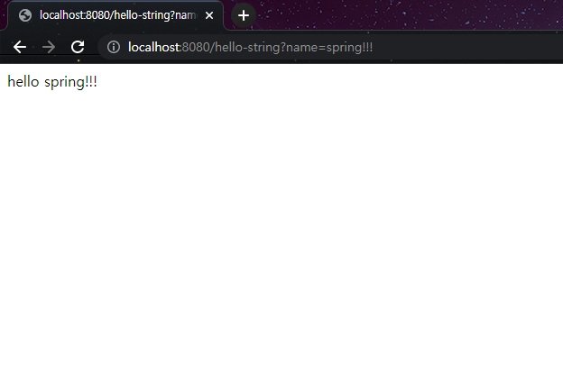
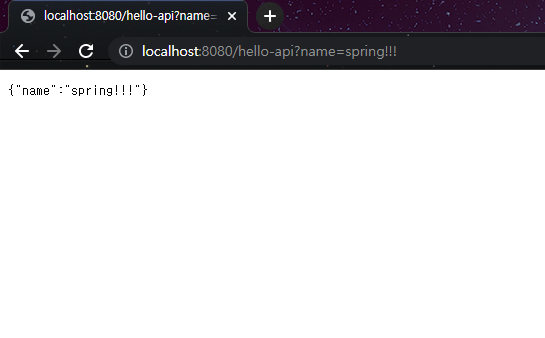

API 방식
- 기존의 Controller에 @ResponseBody라는 annotation을 추가한다. @ResponseBody 는 http의 body부분에 직접 data를 전달받게 한다는 뜻이다.
...
@Controller
public class HelloController {
@GetMapping("hello-string")
@ResponseBody
public String helloString(@RequestParam("name") String name) {
return "hello "+ name;
}
}

...
@Controller
public class HelloController {
@GetMapping("hello-string")
@ResponseBody
public Hello helloApi(@RequestParam("name") String name){
Hello hello = new Hello();
hello.setName(name);
return hello;
}

- localhost:8080/hello-api를 내장 톰캣 서버에 request한다.
- 서버는 Spring container의 hello-api와 관련된 컨트롤러를 찾는다.
- 해당 컨트롤러가 helloController임을 확인하고 @ResponseBody 가 있으므로 리턴 값을 HttpMessageConverter에게 전달한다.
- HttpMessageConverter가 전달받은 리턴값이 String인지 객체인지 확인하고 String이면 StringConverter를 통해서, 객체면 JsonConverter(정확히는 MappingJacson2HttpMessageConverter 라는 라이브러리)를 통해서 적절한 타입으로 해당 값을 변환하고 웹브라우저로 전달한다.